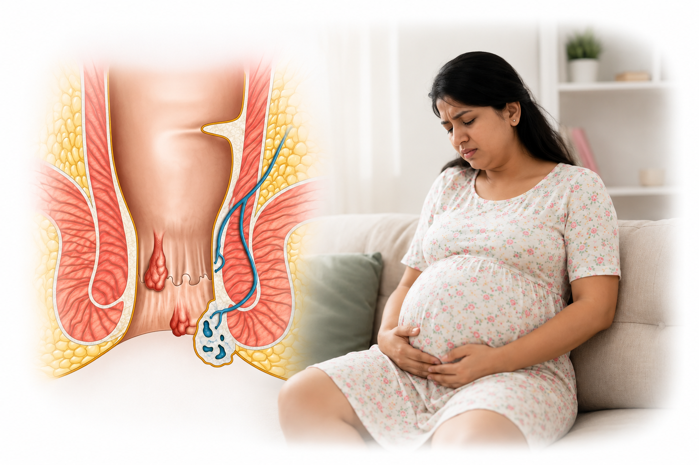

Piles, also called haemorrhoids or hemorrhoids, are swollen veins in or around the anus. They are common during pregnancy and in the weeks after delivery, and most can be managed with simple care.
Dr. Pradipkumar Tupere, a proctologist and general surgeon at Navoday Clinic in Kharadi, Pune, examines you gently, explains what is causing your symptoms and advises care that is suitable during pregnancy and breastfeeding, in consultation with your obstetrician.
At a glance
| Topic | In brief |
|---|---|
| What it is | Swollen veins in or around the anus, common in pregnancy and in the weeks after delivery. |
| Common signs | Itching or discomfort, a soft lump near the anus, and bright red blood on the paper or the stool. |
| Why it happens | Pressure from the growing womb, constipation, and hormone changes that relax the walls of the veins. |
| Usual care | Fibre, fluids, soft stools, rest and warm sitz baths, with medicines only as your doctor and obstetrician advise. |
| Procedures | Usually postponed until after delivery, unless a complication needs prompt care. |
| See a doctor if | Bleeding repeats, a hard and painful lump appears suddenly, or symptoms do not ease with simple care. |
| Where | Navoday Clinic, Kharadi, Pune. |
Symptoms of piles during pregnancy
Piles can be internal, inside the anal canal, or external, under the skin around the anus. Common signs include:
- Itching, irritation or a feeling of fullness around the anus.
- A soft lump near the anus, which may come out when you pass stool and go back afterwards.
- Bright red blood on the toilet paper or on the surface of the stool.
- Mild discomfort when sitting or passing stool.
- Mucus leaking from the anus.
See a doctor soon if
- Bleeding repeats or lasts more than a few days.
- A hard, very painful lump appears suddenly, which can be a clot in a pile.
- Pain is severe, or you have fever or pus near the anus.
- You have sharp pain with each bowel movement, which can mean a fissure.
- Symptoms have not eased after a few weeks of simple care.
Get emergency care now if
Bleeding is heavy, you feel faint, dizzy or breathless, you have severe abdominal pain, or the stool is black and tarry. Go to the nearest hospital emergency department or call 112.
Tell your obstetrician about any bleeding. If you cannot tell whether the blood is from the anus or the vagina, treat it as vaginal bleeding: contact your obstetrician or go to hospital at once.
Bleeding in pregnancy should always be checked, because other conditions can look similar.
Why piles develop in pregnancy
Several changes in pregnancy put the veins around the anus under strain. Common causes and risk factors include:
- Pressure from the growing womb on the veins of the pelvis, which slows the blood flowing back from the anus.
- Constipation, which is common in pregnancy and leads to straining.
- Hormone changes that relax the walls of the veins and slow the gut.
- Iron supplements, which can make stools harder. Do not stop them on your own. Ask your doctor first.
- A larger volume of blood in the body.
- Piles or constipation before pregnancy, or a family history of piles.
- Pushing during labour, which is why piles often appear or flare after delivery.
Piles in pregnancy are not a sign of a problem with the baby.
How piles are checked during pregnancy
The check is gentle and short, and Dr. Tupere keeps tests to those that are needed.
01
Your history
He asks about your symptoms, any bleeding, your bowel habits, your diet, your medicines and supplements, how far along you are, and any concerns your obstetrician has raised.
02
Examination
He looks at the skin around the anus and gently checks the anal canal. You can lie on your side, which may be more comfortable than lying on your back late in pregnancy.
03
Tests only if needed
Scans and colonoscopy are not routine. A colonoscopy is generally deferred during pregnancy unless there is a clear medical reason. Your obstetrician is consulted about any investigation plan. A blood test may be advised if you have been bleeding.
Piles care during pregnancy and after delivery
Most piles in pregnancy settle with simple care, and a procedure is rarely needed. Dr. Tupere advises the plan only after examining you and coordinating with your obstetrician.
Simple care at home
| Step | What it involves |
|---|---|
| Fibre and fluids | More fruit, vegetables, whole grains and pulses, and enough water through the day, to keep stools soft. |
| No straining | Go when you feel the urge, avoid sitting on the toilet for a long time, and put your feet on a small stool. |
| Warm sitz baths | Sitting in warm water for 10 to 15 minutes, especially after a bowel movement, eases discomfort. |
| Rest | Lie on your side to take pressure off the veins, and avoid standing or sitting still for hours. |
| Gentle cleaning | Wash with water and pat dry. Avoid rough wiping and scented products. |
| Walking | A daily walk, if your obstetrician agrees. |
Medicines and creams
Do not start any cream, suppository, tablet or laxative on your own, including those sold for piles, because not every product is suitable in pregnancy or while breastfeeding. Dr. Tupere and your obstetrician decide what is safe for you.
Procedures
A procedure for piles is usually put off until after delivery. The exceptions are complications, such as a painful clot in a pile or heavy bleeding, which need prompt assessment and appropriate treatment during pregnancy.
After delivery
Piles often settle within weeks after delivery as the pressure eases, but they can last or flare after labour. If symptoms continue, Dr. Tupere reviews you and explains your options, including what is suitable while you are breastfeeding.
Consult Dr. Pradipkumar Tupere about piles in pregnancy
Dr. Pradipkumar Tupere is a proctologist and general surgeon with an MBBS and an MS in General Surgery. He treats piles, fissures and fistulas, and his training includes stapler surgery for haemorrhoids in Italy and laser surgery for haemorrhoids and fistula in Austria.
What to expect at your visit
- Book: Call, message on WhatsApp or use the form. We confirm your appointment slot. If you are bleeding heavily or have severe pain, do not wait for an appointment. Go to an emergency department.
- Bring: Your antenatal records or latest reports, a list of your medicines and supplements, the name of your obstetrician, a note of when the symptoms started, and your questions.
- Consultation and examination: Dr. Tupere listens to your symptoms and examines you. He explains each step, and you can ask him to stop at any time.
- Your plan: He explains what he found and the care that suits your stage of pregnancy. With your consent, his advice can be shared with your obstetrician.
If a procedure is needed: You are guided through preparation, the procedure and recovery, with appropriate obstetric involvement.
Piles during pregnancy: frequently asked questions
Yes. Pressure from the growing womb, constipation and hormone changes make piles common, especially in the later months and after delivery. They are not a sign that something is wrong with you or your baby.
Many settle within weeks as the pressure eases, but some last or flare after labour. If piles still trouble you after a few weeks, or you keep bleeding, see a doctor.
Piles do not harm the baby. Bleeding in pregnancy should still be checked by a doctor, so that other causes are not missed.
Not every cream or tablet is suitable in pregnancy or while breastfeeding, so do not start one on your own. Ask your doctor or your obstetrician which product, if any, is right for you.
Eat more fibre, drink enough water, avoid straining, sit in warm water for 10 to 15 minutes after a bowel movement, rest on your side and clean gently with water. If symptoms do not ease, see a doctor.
A procedure for piles is usually put off until after delivery. It is considered in pregnancy only for a complication, such as a painful clot or heavy bleeding. Dr. Tupere explains the options after examining you, together with your obstetrician.
Piles are not usually a reason to avoid a vaginal delivery. Your obstetrician decides the type of delivery from your pregnancy as a whole.
Fibre, water, regular walking and a steady toilet routine help. Do not stop iron or calcium supplements on your own, and ask your doctor if one is making constipation worse.
Tell your obstetrician first. A proctologist or general surgeon can assess piles that bleed, hurt or do not ease with simple care. Dr. Pradipkumar Tupere is a proctologist and general surgeon who consults at Navoday Clinic in Kharadi, Pune.